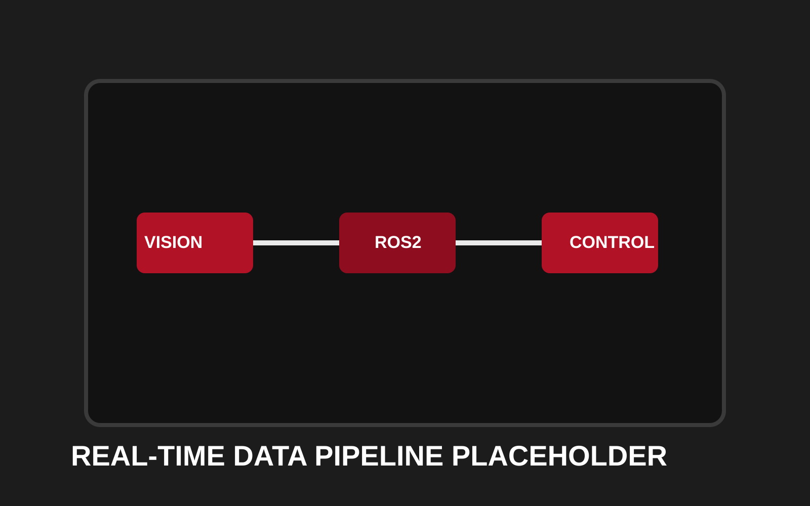

Project Overview
The Automated Camera Tracking System was developed as a senior capstone project to enable continuous high-speed motion data capture over extended ranges. This system integrates mechanical design, ROS2-based controls, and computer vision to create a closed-loop tracking platform capable of capturing precise motion information.
The project demonstrates comprehensive systems engineering: a belt-driven gantry mechanism enables smooth linear motion, real-time motor control manages positioning, and OpenCV-based vision algorithms track subjects dynamically. All subsystems are orchestrated through ROS2, creating a modular, scalable platform for research and data acquisition.
Key Achievement: Designed and commissioned a complete closed-loop system integrating mechanical design, motor sizing, controls, and real-time vision tracking. Validated system performance through structured testing and comprehensive data analysis.
Project Gallery
Placeholders below map to system build stages; swap in your capstone photos and CAD screenshots directly to keep this layout.


System Architecture
Mechanical Subsystem
Belt-driven linear gantry with stepper motors, providing smooth motion over extended travel ranges with submillimeter positioning accuracy
Control Architecture
ROS2-based modular control framework enabling real-time motor commands, sensor feedback integration, and inter-subsystem communication
Vision Pipeline
OpenCV-based real-time tracking algorithms enabling dynamic subject following and automated frame capture at specific motion points
Data Acquisition
Synchronized high-speed camera capture with motion telemetry, producing comprehensive datasets for motion analysis and research
Technical Details
- Mechanical Design: Custom belt-driven gantry with precision ball bearings and stepper motor actuation
- Motor Control: Microstepping drivers with closed-loop encoder feedback for consistent positioning
- Travel Range: Extended linear motion capability suitable for large-scale motion capture scenarios
- Vision Processing: Real-time OpenCV algorithms for subject detection, tracking, and frame synchronization
- Communication: ROS2 middleware enabling scalable node-based architecture and real-time data streaming
Verified Test Results (Capstone Deck)
These results are pulled from the Team 2 final presentation test protocol.
Velocity Test Method: 1 meter marked travel path, 240 FPS recording, 40% motor speed, 3 trials.
| Trial | Frames | Speed (m/s) |
|---|---|---|
| 1 | 40 | 6.0 |
| 2 | 38 | 6.3 |
| 3 | 48 | 5.0 |
| Average | 42 | 5.7 |
Design target: 1.0 m/s minimum. Measured: 5.7 m/s average, approximately 5x design criteria.
The same test package tracked additional criteria for acceleration (target 1 m/s^2), track length (>3m), and ROS-based communication requirements.
Budget Outcome (Capstone Deck)
| Subsystem | Cost |
|---|---|
| Frame & Track | $833.16 |
| Motion System | $60.80 |
| Electronics & Wiring | $362.94 |
Funding: $1,000 senior design budget + $420.62 advisor support = $1,420.62 total.
Outcome: approximately $220 over estimated cost, with budget visibility captured through subsystem-level breakdowns and iterative procurement decisions.
Technology Stack
Key Achievements
- Successfully designed and built a functioning automated motion capture platform from concept to deployment
- Integrated multiple engineering disciplines: mechanical design, controls, and computer vision into a cohesive system
- Achieved reliable closed-loop tracking with vision-based feedback under real-time constraints
- Created modular ROS2 architecture enabling future expansion and research applications
- Established robust mechanical design capable of extended travel with precision and repeatability
Challenges & Solutions
Challenge: Motion Blur Under High-Speed Capture
Solution: Implemented predictive tracking algorithm using ROS2 to anticipate subject motion and position camera ahead of movement, combined with high-speed shutter settings to freeze motion dynamics.
Challenge: System Latency Between Vision Processing and Motor Commands
Solution: Optimized the ROS2 middleware communication stack and implemented dedicated real-time nodes for control, reducing latency to sub-100ms for responsive closed-loop tracking.
Challenge: Mechanical Vibration During High-Speed Motion
Solution: Reinforced frame geometry, upgraded bearing systems, and implemented soft-start acceleration profiles to minimize vibration while maintaining operational speed.
Next Steps From Final Presentation
- Increase structural stability via added cross-bracing between support beams
- Upgrade mirror design for adjustable viewing angles
- Refine bearing block design to reduce reliance on 3D printed parts
- Enhance lighting for more accurate and repeatable video data capture
Source Document
This page incorporates data from the Team 2 Fall 2024 final presentation.
Open Full PresentationInterested in This Project?
Whether you're interested in robotics, research applications, or motion capture technology, let's discuss your needs.
Get In Touch